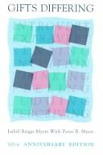

Gifts Differing: Understanding Personality Type
Book·Isabel Briggs Myers, Peter B. Myers, 1980·天生不同

Myers's own explanation of type theory and the MBTI. It is primary material for understanding the indicator.
- Author
- Isabel Briggs Myers, Peter B. Myers
- Year
- 1980
- Difficulty
- Beginner
- Kind
- Primary text
- Schools
- Trait Theory
- Core theories
- Myers-Briggs Type Indicator (MBTI)
Editions
- Chinese edition 《天生不同》 【美】伊莎贝尔•迈尔斯（Isabel Briggs Myers） / 【美】彼得•迈尔斯（Peter B. Myers） · tr. 闫冠男 · 人民邮电出版社 · 2016 Douban 8 (1846 ratings) Douban page ↗
- English edition Gifts Differing: Understanding Personality Type Isabel Briggs Myers, Peter B. Myers · Davies-Black Publishing, reprint · 1995 Open Library ↗